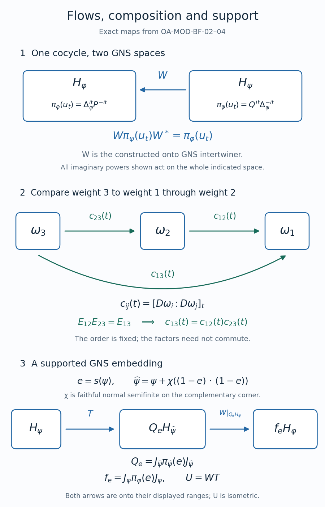

Relative modular flows and corner composition
A modular group on a matrix algebra acts separately on its entries when it fixes the diagonal matrix units. The diagonal entry maps are ordinary modular automorphisms. The off-diagonal maps are linear isometric groups whose multiplication is governed by the two endpoint weights. Their formulas can be read in either GNS column. A third weight then makes composition of comparisons an ordinary product of matrix units. Completing a nonfaithful weight on its complementary corner gives a supported GNS embedding with a specified range.
We use the balanced GNS domains and polar blocks, BT-01–03, the diagonal-weight graph-corner theorem, SI-05, the modular implementation theorem, MF-06, and the balanced cocycle definition and finite domains, GC-03–08. Imaginary powers and unitary transport have the spectral meanings proved in SK-07–08. The finite-cutoff criterion is WG-008, and modular transport by an isomorphism is KM-06. The last section also uses the support restriction, GC-01, and existence of a faithful normal semifinite weight, WH-13. The argument treats an arbitrary von Neumann algebra; all weights explicitly called faithful normal semifinite have exactly those hypotheses.
Entry maps form relative flows
Let \(\omega_1=\varphi\) and \(\omega_2=\psi\) be faithful normal semifinite weights on \(M\), let \(N=M_2(M)\), and put \(\Omega(X)=\varphi(X_{11})+\psi(X_{22})\) for positive matrices. Write \(\rho_t=\sigma_t^\Omega\). By GC-03, \(\rho_t(E_{ii})=E_{ii}\), and its diagonal restrictions are \(\sigma_t^{\omega_i}\).
Since \(xE_{ik}=E_{ii}(xE_{ik})E_{kk}\), there is a unique map \(\tau_t^{ik}:M\to M\) such that \[ \rho_t(xE_{ik})=\tau_t^{ik}(x)E_{ik}. \tag{BF.1} \] Each map is linear and isometric: the entry inclusion is isometric, and \(\rho_t\) is an isometric automorphism. The inverse is \(\tau_{-t}^{ik}\), because the group law stays in the same corner. In particular \[ \tau_{s+t}^{ik}=\tau_s^{ik}\tau_t^{ik},\qquad \tau_0^{ik}=\operatorname{id},\qquad \tau_t^{ii}=\sigma_t^{\omega_i}. \tag{BF.2} \] The entry inclusions and extractions are normal corner maps. Thus each \(\tau_t^{ik}\) is normal, and its orbit on a fixed element is sigma-strong* continuous. No off-diagonal map has been asserted to preserve the unit or multiplication.
Multiplication and adjunction. For any indices \(i,j,k\in\{1,2\}\), apply \(\rho_t\) to \((xE_{ij})(yE_{jk})=xyE_{ik}\). Apply it also to \((xE_{ik})^*=x^*E_{ki}\). The resulting entry equalities are \[ \tau_t^{ik}(xy)=\tau_t^{ij}(x)\tau_t^{jk}(y),\qquad \tau_t^{ik}(x)^*=\tau_t^{ki}(x^*). \tag{BF.3} \] Factoring a threefold product with diagonal outer entries therefore gives \[ \tau_t^{ik}(axb)=\sigma_t^{\omega_i}(a)\, \tau_t^{ik}(x)\,\sigma_t^{\omega_k}(b). \tag{BF.4} \] All these equalities hold for arbitrary elements of \(M\), without an analyticity or finite-weight condition.
Let \(u_t=\tau_t^{12}(1)\). The products \(E_{12}E_{21}=E_{11}\) and \(E_{21}E_{12}=E_{22}\), together with (BF.3), prove unitarity. Taking the intermediate index in (BF.3) equal to one or two gives \[ \begin{aligned} \tau_t^{12}(x)&=u_t\sigma_t^\psi(x)=\sigma_t^\varphi(x)u_t,\\ \tau_t^{21}(x)&=u_t^*\sigma_t^\varphi(x)=\sigma_t^\psi(x)u_t^*. \end{aligned} \tag{BF.5} \] The group law in (BF.2) now gives the precise order \[ u_0=1,\qquad u_{s+t}=u_s\sigma_s^\psi(u_t),\qquad \sigma_t^\varphi(x)=u_t\sigma_t^\psi(x)u_t^*. \tag{BF.6} \] Indeed evaluate \(\tau_s^{12}\tau_t^{12}\) at one and use the first expression in (BF.5). This is the same normalized cocycle constructed in GC-04 and denoted by \([D\varphi:D\psi]_t\) in GC-08.
The finite domains remain exact. The \(ik\) entry of the finite-star algebra of \(\Omega\) is \[ I_{ik}=\mathfrak n_{\omega_i}^*\cap\mathfrak n_{\omega_k}. \tag{BF.7} \] Invariance of the whole finite-star algebra under its modular group shows \(\tau_t^{ik}(I_{ik})\subseteq I_{ik}\); application at \(-t\) gives equality. If \(y\in I_{ik}\), apply \(\rho_t\) to the positive products \((yE_{ik})(yE_{ik})^*\) and \((yE_{ik})^*(yE_{ik})\). Modular invariance on the respective diagonal weights gives \[ \begin{aligned} \omega_i\bigl(\tau_t^{ik}(y)\tau_t^{ik}(y)^*\bigr)&=\omega_i(yy^*),\\ \omega_k\bigl(\tau_t^{ik}(y)^*\tau_t^{ik}(y)\bigr)&=\omega_k(y^*y). \end{aligned} \tag{BF.8} \] These are the two finite energies used in the mixed strip and its recognition theorem GC-05–07. The bounded entry operations used above do not require \(\Omega(E_{ii})<\infty\).
The same flow in either GNS column
Retain the separate spaces \(H_\varphi,H_\psi\). In BT's column order \((11,21,12,22)\), set \[ D_{11}=\Delta_\varphi,\quad D_{21}=P=A^*A,\quad D_{12}=Q=B^*B,\quad D_{22}=\Delta_\psi. \tag{BF.9} \] For fixed column \(j\), both \(D_{ij}\) and \(D_{kj}\) act on \(H_{\omega_j}\). Their imaginary powers are bounded unitaries on that whole space. We claim \[ \pi_{\omega_j}(\tau_t^{ik}(x)) =D_{ij}^{it}\pi_{\omega_j}(x)D_{kj}^{-it} \qquad(i,k,j\in\{1,2\},\ x\in M). \tag{BF.10} \]
Proof. The GNS left representation of \(xE_{ik}\) carries \(H_{kj}\) to \(H_{ij}\), with coordinate operator \(\pi_{\omega_j}(x)\), by BT-03. The modular unitary on \(H_{ij}\) has coordinate \(D_{ij}^{it}\), by the reducing modular blocks of BT-02. Restrict the full identity \[ \pi_\Omega(\rho_t(xE_{ik})) =\Delta_\Omega^{it}\pi_\Omega(xE_{ik})\Delta_\Omega^{-it} \tag{BF.11} \] to the source and target corners. The left side is the left side of (BF.10), and the right side is its right side. This proves the claim for all \(x\). In particular membership of the product in the represented algebra follows from the actual modular automorphism and its corner; boundedness alone would not prove that membership.
The eight formulas are collected here. Each entry in the middle column acts on \(H_\varphi\), and each entry in the last column acts on \(H_\psi\): \[ \begin{array}{c|c|c} \text{element of }M&\pi_\varphi\text{ of that element}&\pi_\psi\text{ of that element}\\ \hline \sigma_t^\varphi(x)&\Delta_\varphi^{it}\pi_\varphi(x)\Delta_\varphi^{-it} &Q^{it}\pi_\psi(x)Q^{-it}\\ \tau_t^{12}(x)&\Delta_\varphi^{it}\pi_\varphi(x)P^{-it} &Q^{it}\pi_\psi(x)\Delta_\psi^{-it}\\ \tau_t^{21}(x)&P^{it}\pi_\varphi(x)\Delta_\varphi^{-it} &\Delta_\psi^{it}\pi_\psi(x)Q^{-it}\\ \sigma_t^\psi(x)&P^{it}\pi_\varphi(x)P^{-it} &\Delta_\psi^{it}\pi_\psi(x)\Delta_\psi^{-it} \end{array} \tag{BF.12} \] No product of unbounded real powers appears in this table. For example the off-diagonal cocycle has the two concrete expressions \[ \pi_\varphi(u_t)=\Delta_\varphi^{it}P^{-it},\qquad \pi_\psi(u_t)=Q^{it}\Delta_\psi^{-it}. \tag{BF.13} \] Their order and signs are fixed by the row and column indices.
If one wants a single Hilbert space, use the already constructed onto intertwiner \(W:H_\psi\to H_\varphi\) from BT-03. Define \[ \widetilde Q=WQW^*,\qquad \widetilde\Delta_\psi=W\Delta_\psi W^*,\qquad D(\widetilde Q)=WD(Q),\quad D(\widetilde\Delta_\psi)=WD(\Delta_\psi). \tag{BF.14} \] Unitary spectral transport, proved in SK-08, transports each imaginary power in the last column of (BF.12). Since \(W\pi_\psi(x)W^*=\pi_\varphi(x)\), that transported column equals the middle column, entry by entry. These are the four common-space compatibility identities. They have now been obtained by a specified unitary; the two original GNS spaces were not silently equated.
Three balanced corners and ordered composition
Let \(\omega_1,\omega_2,\omega_3\) be faithful normal semifinite weights on \(M\). On \(N_3=M_3(M)\), define \[ \Theta(X)=\omega_1(X_{11})+\omega_2(X_{22})+\omega_3(X_{33}), \qquad X\geq0. \tag{BF.15} \] This is faithful normal semifinite. Addition and the normality of diagonal compression prove normality. If a positive matrix has zero weight, all its diagonal entries vanish by faithfulness. For its positive square root \(Y\), this says \(\sum_k Y_{ki}^*Y_{ki}=0\) in each column, so every entry is zero. For semifiniteness, combine finite positive contraction nets for the three weights into diagonal matrices. These increase to the identity and have finite \(\Theta\)-value; WG-008 proves semifiniteness. The finite-left criterion is again a column criterion, since \[ \Theta(X^*X)=\sum_{j=1}^3\sum_{i=1}^3\omega_j(x_{ij}^*x_{ij}). \tag{BF.16} \] Its finite-star criterion is \(x_{ij}\in\mathfrak n_{\omega_j}\cap\mathfrak n_{\omega_i}^*\). Thus no finite value at the identity or at a matrix unit has entered the construction.
Why a two-corner modular restriction is the intrinsic one. Fix distinct indices \(i,j\), and let \(k\) be the remaining one. Set \(e=E_{ii}+E_{jj}\) and \(f=E_{kk}\). The restriction \(\Theta_e\) to \(eN_3e\) is the two-by-two balanced weight for \(\omega_i,\omega_j\), hence faithful normal semifinite by GC-03. The restriction to \(fN_3f\) is \(\omega_k\). For every positive \(X\), \[ \Theta(X)=\Theta_e(eXe)+\omega_k(X_{kk}). \tag{BF.17} \] Apply SI-05 to these two complementary projections in \(N_3\). It proves that \(e\) and \(f\) are fixed by \(\sigma^\Theta\), and that the restriction of this modular group to \(eN_3e\) is exactly the intrinsic modular group of \(\Theta_e\). The proof works with the GNS corner unitary and its compressed finite-star graph core; it does not assume that arbitrary modular restrictions are intrinsic. It also fixes the two constituent diagonal matrix units because GC-03 fixes them inside that corner. As the pair varies, all three diagonal matrix units are fixed.
Under the normal star isomorphism from \(M_2(M)\) to \(eN_3e\) sending its first and second diagonal units to \(E_{ii}\) and \(E_{jj}\), respectively, \(\Theta_e\) is \(\omega_i\oplus\omega_j\). The GNS map of a weight transported by this isomorphism preserves the full finite-star graph, so it transports its modular group, as proved in KM-06. Hence, in the numerator-first convention, \[ \sigma_t^\Theta(E_{ij})=[D\omega_i:D\omega_j]_t E_{ij}. \tag{BF.18} \] This identifies the actual normalized cocycle. Modular intertwining alone would leave scalar phases undetermined.
Now apply the automorphism \(\sigma_t^\Theta\) to \(E_{12}E_{23}=E_{13}\). Equality of the single resulting entry gives \[ [D\omega_1:D\omega_3]_t =[D\omega_1:D\omega_2]_t[D\omega_2:D\omega_3]_t. \tag{BF.19} \] Taking \(\omega_1=\psi\), \(\omega_2=\rho\), \(\omega_3=\varphi\) proves the ordered chain rule. All factors are bounded unitaries; no unbounded domains are multiplied and no two different factors are commuted. The two-by-two calculation in CH-03 proves explicitly that reversing the order can change the answer. The earlier spatial proof of the same rule cancels adjacent imaginary powers; the present proof supplies the separate three-corner construction and justifies its modular restrictions.
Completing a nonfaithful weight on its complementary corner
Fix a faithful normal semifinite \(\varphi\) on \(M\), and let \(\psi\) be any normal semifinite weight. Write \(e=s(\psi)\) and \(f=1-e\). The support theorem used in GC-01 gives \[ \psi(x)=\psi(exe)\quad(x\geq0),\qquad \Lambda_\psi(a)=\Lambda_\psi(ae)\quad(a\in\mathfrak n_\psi), \tag{BF.20} \] and its restriction \(\psi_e\) to \(eMe\) is faithful normal semifinite. This statement uses the given semifiniteness of \(\psi\).
Choose a faithful normal semifinite weight \(\chi\) on \(fMf\), using WH-13. If \(f=0\), use the unique weight on the zero algebra. Define on \(M_+\) \[ \psi'(x)=\chi(fxf),\qquad \widehat\psi(x)=\psi(x)+\psi'(x) =\psi_e(exe)+\chi(fxf). \tag{BF.21} \] The first is a normal weight of support \(f\): for positive \(x\), its value is zero exactly when \(fxf=0\), or equivalently \(x^{1/2}f=0\). In particular its largest null projection is \(e\). Its semifiniteness follows by lifting finite positive contractions for \(\chi\) and adjoining the projection \(e\), which has zero \(\psi'\)-weight. Those finite contractions increase to one, so WG-008 applies. Apply SI-05 inside \(M\), with complementary projections \(e,f\) and the faithful corner weights \(\psi_e,\chi\). It proves that \(\widehat\psi\) is faithful normal semifinite and that \(e\) is fixed by its modular group.
The finite-left domains have the exact relation \[ \mathfrak n_\psi e=\mathfrak n_{\widehat\psi}e \subseteq\mathfrak n_{\widehat\psi}. \tag{BF.22} \] To prove it, if \(a\in\mathfrak n_\psi\), then \[ \widehat\psi((ae)^*(ae)) =\psi(ea^*ae)=\psi(a^*a)<\infty. \tag{BF.23} \] Thus \(ae\in\mathfrak n_{\widehat\psi}\) and is its own right compression by \(e\). Conversely \(\widehat\psi\geq\psi\), so every element of \(\mathfrak n_{\widehat\psi}\) belongs to \(\mathfrak n_\psi\); its right compression then belongs to the left side of (BF.22). This also proves the final inclusion. The equality is between these compressed ideals, not between the two original finite-left ideals.
The prescription \[ T\Lambda_\psi(a)=\Lambda_{\widehat\psi}(ae) \qquad(a\in\mathfrak n_\psi) \tag{BF.24} \] is well-defined and isometric by (BF.23), including when the original GNS construction has null vectors. Its range is exactly \[ Q_e H_{\widehat\psi},\qquad Q_e=J_{\widehat\psi}\pi_{\widehat\psi}(e)J_{\widehat\psi}. \tag{BF.25} \] Indeed SI-05 identifies \(Q_e\Lambda_{\widehat\psi}(b)=\Lambda_{\widehat\psi}(be)\). Equation (BF.22) identifies the dense vectors of this projected range with the image in (BF.24). An isometry has closed completed range, which proves the onto assertion for that range. Left multiplication gives \(T\pi_\psi(x)=\pi_{\widehat\psi}(x)T\) first on finite vectors and then everywhere.
Use the particular unitary \(W:H_{\widehat\psi}\to H_\varphi\) constructed from the commutant flip in BT-03. Besides intertwining \(M\), this unitary satisfies \[ WJ_{\widehat\psi}=J_\varphi W. \tag{BF.26} \] Here the choice matters. In BT's notation \(W=J_\varphi J_B\), and the two row restrictions of the commutant flip proved \(J_\varphi J_B=J_BJ_{\widehat\psi}\). Multiplying this identity on the left by \(J_\varphi\) gives \(J_B=J_\varphi J_BJ_{\widehat\psi}=WJ_{\widehat\psi}\), whereas \(J_\varphi W=J_B\). This proves (BF.26); it has not been inferred from algebra intertwining alone.
Consequently \(U=WT\) is an isometry intertwining \(M\), and its range is exactly \[ \operatorname{ran}U =J_\varphi\pi_\varphi(e)J_\varphi H_\varphi. \tag{BF.27} \] This follows by conjugating the projection in (BF.25) using both intertwining identities of \(W\). When \(e=1\), the range is the whole space; when \(e=0\), it is zero. For a proper support, it is a supported module rather than just the smaller corner \(\pi_\varphi(e)J_\varphi\pi_\varphi(e)J_\varphi H_\varphi\). Thus the faithful-completion method proves the same precise supported semicyclic conclusion as the independent Gram-identity construction in GC-01–02.

Original illustration: OpenAI Codex (AI). The first panel uses the two representations and the particular unitary in BF.12–14. The second reads composition from weight 3 through weight 2 to weight 1; matrix multiplication puts the last arrow on the left, as in BF.19. The third shows the exact isometric range in BF.24–27; neither arrow asserts that a proper support fills the entire reference GNS space. Reproducible source: render-balanced-flow-composition-support.py.
Source correspondence
M. Takesaki, Theory of Operator Algebras II, VIII.3, printed pages 111–113, uses the two-column compatibility formulas and bimodule multiplication to construct the cocycle. BF-01–02 prove these identities with specified Hilbert spaces and a constructed common-space unitary. Printed page 115 proves the chain rule by three matrix corners. BF-03 supplies the faithful normal semifinite construction and the intrinsic pair-corner restrictions needed for that proof. BF-04 supplies the complementary-weight construction on printed page 111, with exact finite ideals and the range of the supported GNS isometry. The general mixed strip and its normalized uniqueness remain the separate written results GC-05–08.